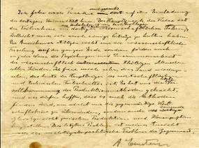

Ngày 29 tháng 5 năm 1919, danh của Einstein nổi lên như cồn. Chính quyền Đức mới đầu có tính cách dân chủ, ngỏ ý mời ông vô quốc tịch Đức để ủng hộ chế độ dân chủ, ông nể tình, bỏ quốc tịch Thuỵ Sĩ, trở về quốc tịch Đức. Dân chúng trước kia không để ý gì tới thuyết tương đối, bây giờ nhao nhao lên đòi phổ biến thuyết đó: từ các ông tổng trưởng tới các phu mỏ, ai nấy đều hỏi nhau thuyết đó ra sao. Bọn con buôn nắm ngay cơ hội, tung ra những nhãn hiệu “xì gà tương đối”, “thuốc đánh răng tương đối”; trong câu chuyện, từ ngữ “một cách tương đối” được dùng luôn miệng.
Một người Hoa Kì ở Paris đặt một giải thưởng năm ngàn Mĩ kim để tặng tác giả thiên khảo luận nào hay nhất về thuyết đó, các nhà xuất bản đua nhau in các tập khảo luận đó, đa số viết sai bét, còn một số thì khó quá, chỉ một nhà toán học hạng giỏi mới hiểu nổi[17]. Để thoả mãn nhu cầu của đại chúng, Einstein viết một cuốn cho những người trình độ trung bình biết kha khá về toán tức cuốn Relativity: The Special and the General Theory xuất bản năm 1921.
Trường đại học nào cũng mời ông lại diễn thuyết và buổi diễn thuyết nào cũng đông nghẹt, tới nỗi cảnh sát phải đứng chặn ở cửa, giữ trật tự. Ít ai hiểu được thuyết của ông, nhưng ai cũng muốn coi tướng mạo ông ra sao mà đoán trước được sự đi lệch đường của tia sáng. Đủ các hạng người lại chầu chực ở nhà ông để xin chữ kí. Nhiều trường đại học châu Âu mời ông lại dạy. Ông không còn được yên ổn làm việc nữa, nói với học giả Ratheneau, bạn thân mà cũng gốc Do Thái như ông:
- Tôi chỉ tìm được một nguyên tắc; tìm được nguyên tắc là nhận định được một cái gì đã có trước rồi, chớ có sáng tạo được gì đâu, mà sao thiên hạ hoan nghênh như vậy?

Bút tích của Einstein
Mấy năm sau ông phải đi khắp nơi diễn thuyết, Hoà Lan, Áo, Hoa Kì. Tàu vừa cặp bến New York, các nhà báo bu chung quanh ông:
- Thưa giáo sư, phải khắp thế giới chỉ có mười hai người hiểu thuyết tương đối?
Ông đáp:
- Tôi không bao giờ tuyên bố như vậy. Tôi đâu có muốn lập một thuyết chỉ để cho mười hai người hiểu nổi. Các nhà vật lí học đều hiểu thuyết đó, một số sinh viên của tôi cũng vậy.
Rồi một tay cầm chiếc vĩ cầm, một tay dắt vợ, ông bước xuống cầu thang.
Dân chúng New York đứng chật đường hoan hô ông, từ cửa sổ tung hoa giấy xuống đầu ông. Ông nói với bà:
- Tụi mình y như một đoàn xiếc vậy. Anh cứ tưởng thiên hạ thích ngắm một con hưu cao cổ hay một con voi hơn là một nhà vật lí học.
Khi người ta hỏi ông cảm tưởng về New York ra sao, ông đáp:
- Các bà, các cô ở đây thích mỗi năm đổi mốt một lần. Năm nay có mốt mới, là mốt tương đối.
Lần đó ông qua Mĩ là theo lời mời của Chaim Weizmann, một nhà bác học ái quốc Do Thái, sau làm tổng thống đầu tiên của quốc gia Do Thái. Ông diễn thuyết để lấy tiền giúp thành lập viện đại học Do Thái ở Palestine. Ở Hàn lâm viện Quốc gia (National Academy) ông bảo: “Một người sau nhiều năm tìm tòi mà tình cờ kiếm ra được một ý, vén được một chút màn bí mật của vũ trụ thì có gì đâu mà đáng tán tụng. Sự thích thú khi tìm kiếm được đã đủ là phần thưởng cho người đó rồi”.
Ông thích tinh thần lạc quan của người Hoa Kì nhưng chê họ ham tiền, ham vật chất quá, mà sao các vụ trộm cướp giết người nhiều thế.
Từ Mĩ ông bà trở về Anh, rồi Pháp, được gặp gần hết các nhà bác học danh tiếng nhất thế giới. Khi trở về Đức thì tình hình ở Đức bắt đầu xáo trộn dữ dội. Đức thất trận, bị Anh, Pháp bắt bồi thường những khoản quá nặng, dân chúng nghèo khổ, Đức kim mất giá kinh khủng, có những người hồi trước chiến tranh giữ địa vị quan trọng bây giờ phải đi ăn xin. Người ta đổ lỗi cho chính phủ Cộng Hoà và cho bọn Do Thái, và dân chúng bắt đầu bị Hitler thuyết phục.
Bạn thân của ông, Ratheneau, bị ám sát chỉ vì là Do Thái, và có người doạ rằng sau Ratheneau là sẽ tới phiên ông, nên ông tránh, ít khi ra mặt trước công chúng và nắm ngay cơ hội để qua Trung Hoa, Nhật Bản diễn thuyết.
Ở Nhật, ông được hoan nghênh nhiệt liệt: Nhật hoàng coi ông là thượng khách, dắt ông bà đi coi vườn Thượng uyển trồng đầy cúc, còn dân chúng thì chen chúc nhau trước khách sạn, thức suốt đêm để đợi lúc ông xuất hiện trên ban công. Ông cảm động, nhưng bực mình vì phải dự tiệc, bắt tay và tặng chữ kí. Chính trong khi ở Nhật, ông hay tin được giải thưởng Nobel[18].
Trên đường về châu Âu, ông ghé Palestine, Y Pha Nho.
[17] Nguyễn Xuân Sanh cho biết: “…5.000USD thời bấy giờ là một số tiền rất lớn, cho ai trình bày được thuyết tương đối hay nhất không quá 3.000 chữ, khoảng 12 trang đánh máy, sẽ được đăng trong Scientific American. Tờ tạp chí chủ trì. Có 300 bài dự thi. (…) Người trúng giải mang bút hiệu bút hiệu “Zodiaque”, lại là nhân viên của Sở sáng chế Anh, một sự trùng hợp đến kinh ngạc, nếu chúng ta nhớ lại rằng Einstein là chuyên viên của Sở sáng chế liên bang Thuỵ Sĩ khi ông khám phá Thuyết tương đối hẹp! – Theo Hermann, Einstein, tr. 252”. (Sđd, trang 119). (Goldfish).
[18] Theo Nguyễn Xuân Sanh thì: “Tháng mười Einstein lên đường cùng Elsa đi đến Marseil để lên tàu Kitano Maru đi Kobe. Trên đường ông dừng chân tại một số điểm, như Colombo, Singapur, Honkong. Ngày 13.11 tàu ông dừng chân tại Thượng Hải. Trước đó Einstein đã nhận được điện tín báo ông được trao giải Nobel vật lý năm 1921 về “những đóng góp cho vật lý lí thuyết, và đặc biệt cho khám phá của ông về định luật hiệu ứng quang điện”. Không một lời nào về thuyết tương đối. Trong nhật ký của ông, người ta cũng không thấy ghi lại sự kiện này. (…) Ngày 17.11 tàu cập bến Kobe”. (Sđd, trang 125-126). (Goldfish).
[19] Sách in là “vật lí”, tôi tạm sửa lại thành “luật”. (Goldfish).